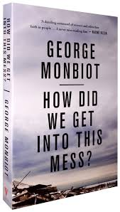

Not many authors write a book in nine days, and fewer still are likely to announce it in the prologue.
Yanis Varoufakis has no qualms about doing so in this brief history of capitalism, structured around the device of talking to his daughter, Xenia, not long a teenager.
It was first published a few years ago, when she was even younger, and has been updated for British readers following a further week’s writing.
By being open about the writing process, the scholar and politician manages his readers’ expectations; but he also builds them, by promising
to explain economics in a language that everyone can understand, in place of the jargon- infested pseudo-scientific language of mainstream economics.
A people and its king is a French film directed and written by Pierre Schoeller , released in 2018 .
Interpreted, among others, by Adele Haenel and Gaspard Ulliel , he traces the French Revolution in Paris from the taking of the Bastille to the execution of the king .
This film is a historical fresco about the French Revolution , retracing the first years of this period (1789-1793), focusing in particular on the role and perception by his contemporaries of King Louis XVI in the tumults that shake France and which bring the end of the society of Ancien Régime .
The film shows historical figures of this moment, such as Robespierre , Marat , Desmoulins or Danton , in secular States-General who turn into a very young National Assembly before turning into a revolutionaryConstituent Assembly .
What book am I reading now?

If you want to share an interesting book or film to read, don't hesitate to send me it.